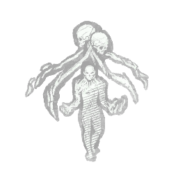

秘密计划 Secret Project
所属：先驱者（杀手）
| 等级 | 档位 1 | 档位 2 | 档位 3 |
|---|---|---|---|
| 数值 | 20 1 | 25 | 30 |
描述
"你被当作武器养大，却凭借囚徒们一手打磨出的技艺挣脱了束缚。" 每当日上的图腾被封锁 20/25/30 秒时。 每当日上任意数量的发电机完成修复时，获得 30 秒的**无法被侦测**状态效果。 "你和我一样，都是这里的囚徒。"—— 亨利·克瑞尔

所属：先驱者（杀手）
| 等级 | 档位 1 | 档位 2 | 档位 3 |
|---|---|---|---|
| 数值 | 20 1 | 25 | 30 |
"你被当作武器养大，却凭借囚徒们一手打磨出的技艺挣脱了束缚。" 每当日上的图腾被封锁 20/25/30 秒时。 每当日上任意数量的发电机完成修复时，获得 30 秒的**无法被侦测**状态效果。 "你和我一样，都是这里的囚徒。"—— 亨利·克瑞尔